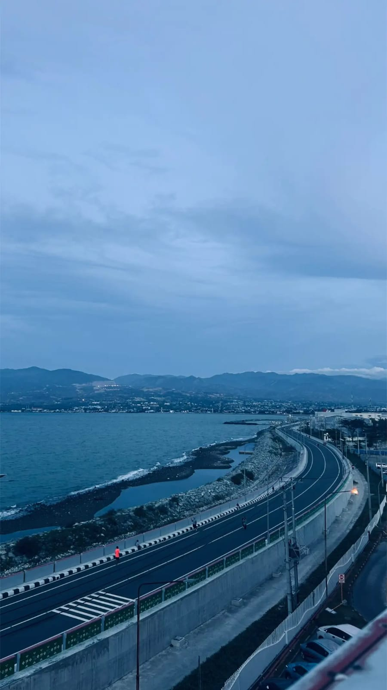
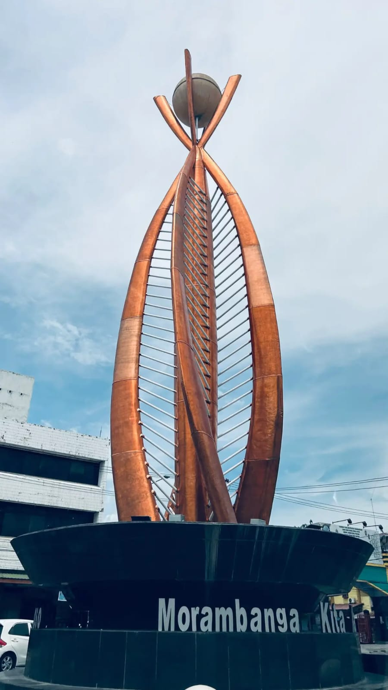

The Beauty of Palu

Mengenal Pesona Kota Palu
Palu adalah ibu kota Provinsi Sulawesi Tengah yang memiliki bentang alam khas, dari kawasan teluk hingga perbukitan. Kota ini juga menyimpan sejarah dan kekayaan budaya masyarakat Kaili.
Melalui website ini, kamu dapat menemukan inspirasi perjalanan sekaligus mengenal cerita yang menjadi bagian dari identitas Palu.
Destinasi Pilihan
Beberapa tempat yang dapat menjadi awal untuk menjelajahi Palu dan kawasan sekitarnya.



Sejarah Palu dan Budaya Kaili
Di balik keindahan alamnya, Palu memiliki perjalanan sejarah dan tradisi masyarakat Kaili yang menarik untuk dikenal. Temukan ringkasan asal-usul nama Palu, sejarah kerajaan Kaili, dan perkembangan kota.
"Sebuah tempat bukan hanya tentang pemandangannya, tetapi juga tentang sejarah dan cerita yang diwariskan."

Misteri dan Legenda Wentira
Wentira dikenal dalam cerita masyarakat setempat sebagai tempat yang dikaitkan dengan berbagai kisah misteri. Bagian ini menyajikan legenda, cerita yang berkembang, serta pemisahan antara kepercayaan masyarakat dan informasi yang dapat diverifikasi.